Em pouco mais de 10 anos, o Brasil observou uma guinada à centro-direita em todas as esferas da sociedade. Governado pelo Partido dos Trabalhadores (PT), de esquerda, entre 2003 e o primeiro semestre de 2016, o país viu nascer e ganhar espaço um sentimento destacadamente antipetista. Em especial, após as Jornadas de Junho de 2013, que expressavam tanto um descontentamento com a gestão da então presidente Dilma Rousseff (PT) quanto um desgaste do sistema político pelos constantes escândalos de corrupção. Esse último elemento foi reforçado pela Operação Lava Jato.
Ao mesmo tempo em que as pautas ligadas ao conservadorismo voltavam a ganhar força, a partir da reeleição da presidente Dilma, em 2014, uma expressão da sociedade brasileira que até então, preferia atuar nos bastidores da política, passou a reivindicar um espaço de relevância.
Os evangélicos, como normalmente são agrupados os cristãos batistas, presbiterianos, pentecostais, neopentecostais, e de outras denominações, cresceram singularmente no Brasil nas últimas duas décadas, ao ponto de representarem 32% da população em 2022, de acordo com o Instituto Brasileiro de Geografia e Estatística (IBGE).
Também com o advento das redes sociais, a presença da política nas igrejas foi maximizada, refletindo nos templos os debates que ocorriam nas ruas. Os púlpitos passaram a ser ocupados por evangelistas, pastores e bispos que assumiram o papel de líderes religiosos e políticos. E com o apoio dos fieis, essas figuras se deram conta de que podiam preencher as cadeiras das casas legislativas de todo país - em especial, do Congresso Nacional.
“Autoritarismo & Avanço Conservador” busca quantificar o crescimento do apelo às pautas conservadoras na política, principalmente por meio de líderes vinculados a igrejas evangélicas. O foco de estudo está na Assembleia Legislativa de Pernambuco (Alepe). Para isso, o período de análise escolhido se estende pelas legislaturas 2014 a 2022, passando por fenômenos como a Operação Lava Jato, o impeachment de Dilma Rousseff (PT), a ascensão do Bolsonarismo - momento de maior destaque das pautas conservadoras e evangélicas na política de Pernambuco e do Brasil -, e o retorno de Lula ao Palácio do Planalto.
Reduto Eleitoral
Distribuição da porcentagem dos votos válidos do deputado em cada município de PE.